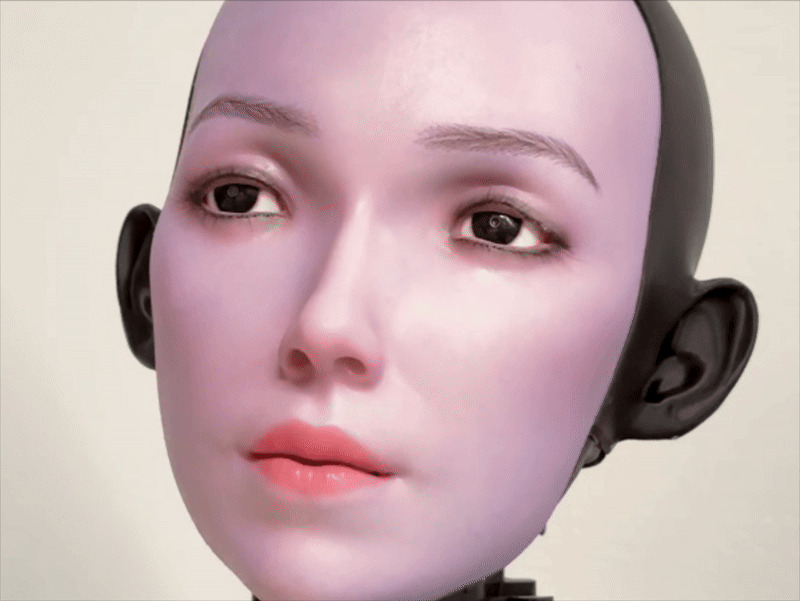

hover ▸ play
Under Review
Eye, Robot: Learning Realistic Robot Gaze From Human Motion Data
Realistic Gaze Transformer (RGT), a Transformer-VAE framework that learns full-head gaze dynamics — including head rotations and eyelid movements — from human motion-capture data.